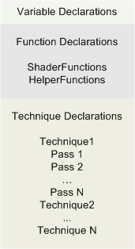

description: An effect (which is often stored in a file with a .fx file extension) declares the pipeline state set by an effect.
ms.assetid: 75b76d65-be97-41c2-8c45-4369fcfd69ce
title: Effect Format (Direct3D 10)
ms.topic: reference
ms.date: 05/31/2018
Effect Format (Direct3D 10)
An effect (which is often stored in a file with a .fx file extension) declares the pipeline state set by an effect. Effect state can be roughly broken down into three categories:
- Variables, which are usually declared at the top of an effect.
- Functions, which implement shader code, or are used as helper functions by other functions.
- A technique, which implements rendering sequences using one or more effect passes. Each pass sets one or more state groups and calls shader functions.

The preceding diagram shows the categories of effect state.
Related topics
Effect Reference
Â
Â